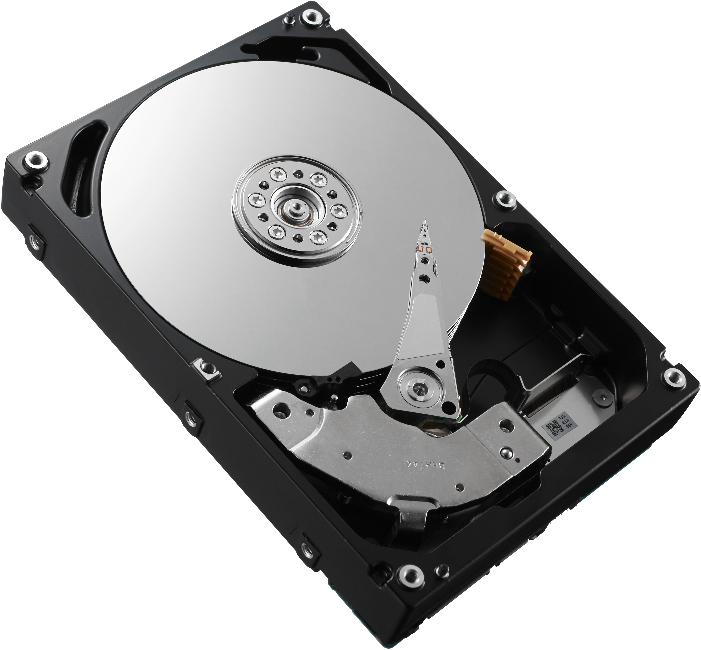
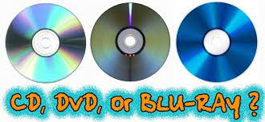

Het onderwerp geheugen vond ik heel erg interessant. Ik kon er ook veel informatie over kiezen. Daaom heb ik dit onderwerp gekozen als specifieke onderwerp. Deze pagina bevat dus meer informatie dan de andere onderwerpen.
De afkorting RAM staat voor Random Access Memory en is het kortetermijngeheugen van de computer. Met het Ram-geheugen worden alle gegevens opgeslagen zoals het verplaatsen van de muis. Daarnaast is het Ram-geheugen erg toegankelijk in vergelijking met de harde schijf. Random houdt in dat de gegevens overal kunnen worden opgeslagen. Het RAM-geheugen wordt aangetoond met de verversingssnelheid in de eenheid megahertz.
Er zijn twee verschillende soorten RAM-geheugen:
het SRAM-geheugen (Static Random Access Memory) en het DRAM-geheugen (Dynamic Random Access Memory).
Het SRAM-geheugen maakt gebruik van transistoren waarin data wordt opgeslagen.
Het SRAM-geheugen gebruikt constant energie om gegevens te vernieuwen.
Het DRAM-geheugen maakt gebruik van condensatoren om gegevens in op te slaan.
Het DRAM-geheugen laat langzaam energie los om geheugen te vernieuwen.
Als de stroom uit wordt gezet worden alle gegevens uit het RAM-geheugen verwijderd.
https://www.avg.com/nl/signal/what-is-ram
Het ROM-geheugen staat voor Read Only Memory. De ROM bewaart een bepaald programma, ook als het apparaat uit staat. In tegenstelling tot het RAM-geheugen is de ROM niet zo snel en wordt vaak dus ook het RAM-geheugen gebruikt.
https://nl.wikipedia.org/wiki/Read-only_memory
Er zijn een aantal verschillen tussen het RAM- en ROM-geheugen. Het ROM-geheugen is, in tegenstelling tot het RAM-geheugen, niet tijdelijk maar permanent. Zo wordt alle gegevens die de ROM heeft opgeslagen niet verwijderd als je de computer uitzet. Daarnaast heeft het RAM-geheugen stroom nodig om data te kunnen bewaren en ROM niet.
https://www.test-aankoop.be/hightech/computers-en-tablets/dossier/ram-rom
Permanent geheugen is niet-vluchtig geheugen. In tegenstelling tot vluchtig geheugen zoals het RAM-geheugen verliest permanent geheugen geen gegevens bij het wegvallen van de spanning. Een aantal voorbeelden van permanent geheugen zijn het ROM-geheugen en de harde schijf. Bij permanent geheugen maken we onderscheid tussen intern en extern geheugen.
Alle informatie over het permanente geheugen is gevonden op de website hieronder
https://sites.google.com/site/infcomputersystemen/algemene-kenmerken/vluchtig-en-permanent
Het intern geheugen bevindt zich op het moederbord en is bepalend voor het functioneren van de computer. Het interne geheugen bestaat uit geheugenchips die zorgen voor een snelle werking van het computersysteem. Een voorbeeld van een geheugenchip is de videokaart. Er zijn veel verschillende soorten geheugenchips, maar de 4 belangrijkste zijn het werkgeheugen, het cachegeheugen en het CMOS-geheugen.
https://sites.google.com/site/infcomputersystemen/soorten-geheugen/intern-geheugen
Er zijn verschillende soorten extern geheugen, zoals de magnetische- en optische opslag en het flashgeheugen.
https://sites.google.com/site/infcomputersystemen/soorten-geheugen/extern-geheugen
Dit is de oudste vorm van geheugen waarmee je data kan oplossen. Magnetische opslagmedia, zoals de harde schijf, zijn bedekt met een laagje magnetiseerbaar materiaal. Deze laag bestaat uit een plastic film waar deeltjes in zitten die magnetische eigenschappen bevatten. Computers werken via een binair talstelsel, waardoor een geladen deeltje het getal 1 wordt en een ongeladen deeltje getal 0 wordt. Om de gegevens op een band of schijf te kunnen lezen heb je een leeskop nodig en om de gegevens aan te passen heb je een schrijfkop nodig. Deze koppen bevatten elektro-magneten die de fijne deeltjes in de schijf magnetiseren of demagnetiseren. Voorbeelden van magnetisch geheugen zijn de videocassette, Diskette en de harde schijf.
Optische opslag is minder kwetsbaar, heeft een langere levensduur en de data kan dichter op elkaar worden geplakt in vergelijking met magnetische opslag. Voorbeelden van optische opslag zijn de cd, dvd en blu-ray. Deze vormen van optische opslag bestaan uit meerdere lagen om de gegevens te beschermen. Bij de cd, dvd en blu-ray wordt er onderscheidt gemaakt tussen recordable en rewritable opslag. Als een cd recordable is kan het medium maar 1 keer geschreven worden en daarna alleen nog maar gelezen. Als een cd rewritable is kan het medium meerdere keren geschreven worden.
https://sites.google.com/site/infcomputersystemen/soorten-geheugen/extern-geheugen/optische-opslag
Flashgeheugen kan heel snel bestanden toevoegen en verwijderen. De meest bekende vormen van flashgeheugen zijn de geheugenkaart, de USB-stick en de SSD. Geheugenkaarten worden in verschillende soorten draagbare media gebruikt zoals de smartphone. USB-sticks worden gebruikt om data van de ene naar de andere computer te verplaatsen. SSD staat voor Solid State Drive en is de opvolger van de harde schijf. SSD heeft een snellere toegangstijd, een hogere lees- en schrijfsnelheid en gebruikt geen beweegbare onderdelen meer wat wel het geval is bij de harde schijf. Computers bevatten vaak een harde schijf en een SSD. Flashgeheugen bestaat uit verschillende flashcellen en werkt volledig elektrisch.
https://sites.google.com/site/infcomputersystemen/soorten-geheugen/extern-geheugen/flashgeheugen